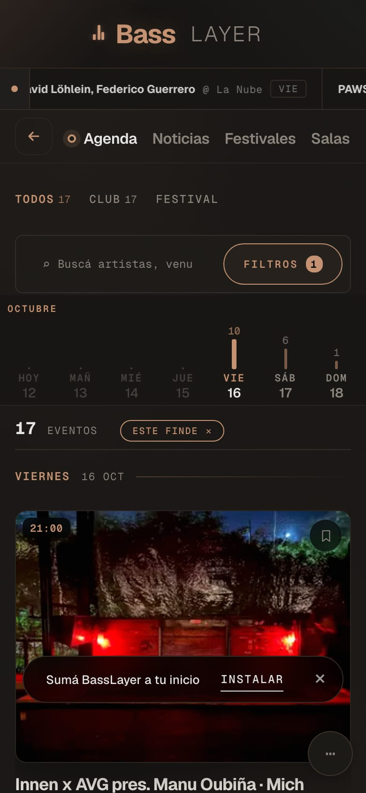
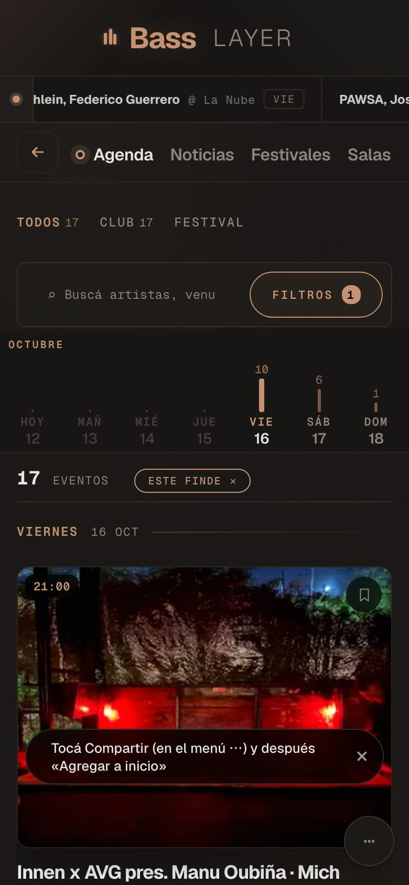
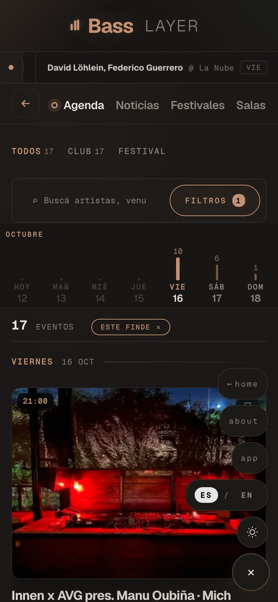
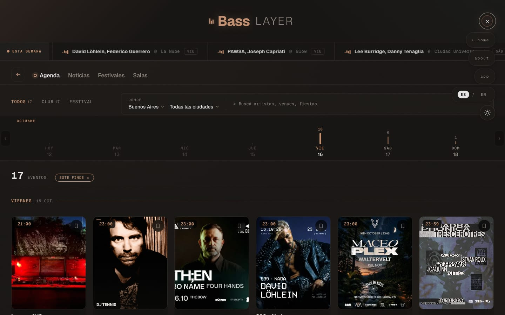
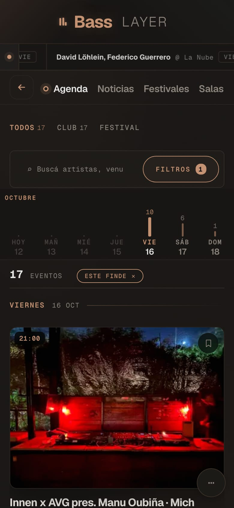
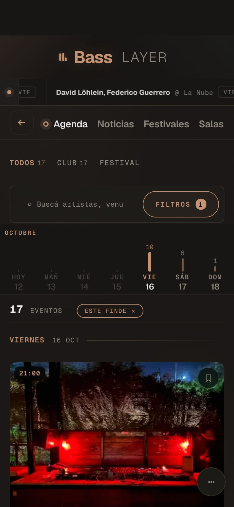
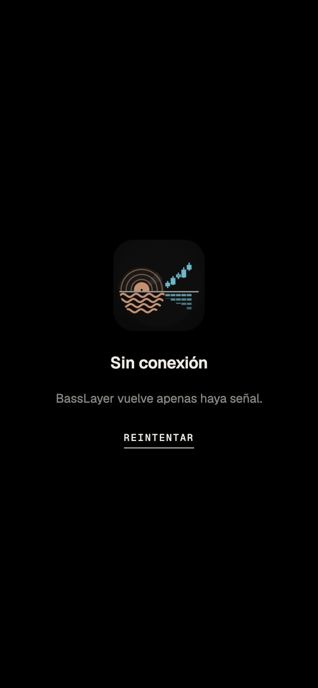
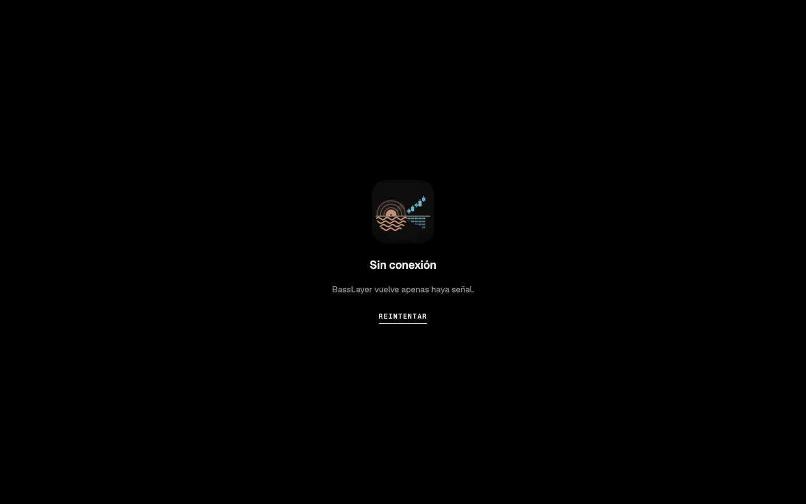

Todo lo que cambia, antes de seguir
El ícono es la ficha del home. Abajo está cada lugar donde aparece y cada pantalla nueva de la app. Las capturas marcadas captura real salen del sitio corriendo con esta rama; las marcadas simulación son pantallas del sistema (el celular, la tienda, el dock) que un navegador no puede capturar, dibujadas con los archivos reales.
La ficha, redibujada para cada tamaño
Misma geometría que el home: el vinilo asomando, el horizonte, las velas del BTC y el agua. No se achica: en el inicio del celular va el dibujo medio (menos surcos, líneas más gruesas) y en la pestaña del navegador, el mini, sin el marco redondo y con la escena acercada.
 BassLayerBassLayer
BassLayerBassLayerDónde vive el ícono
simulación iPhone con fondo oscuro, claro y en modo tintado (iOS 26 lo genera solo a partir del ícono), Android con su máscara redonda (usa el ícono maskable, que deja la ficha entera adentro) y el dock de una Mac.
Lo que ve la persona cuando la instala
simulación En Android, Chrome muestra una hoja con el ícono, la descripción y las capturas nuevas (antes eran del home viejo, con Instagram); al abrir la app, la pantalla de arranque es el ícono sobre negro. En iPhone, "Agregar a inicio" muestra el ícono y el nombre.

La noche y el mercado de Buenos Aires: la agenda de música electrónica y los mercados, cripto incluida.



Se agregará un ícono a tu pantalla de inicio para que puedas acceder rápidamente a este sitio web.
Una línea, una sola vez
captura real Aparece en la segunda visita, después de 15 segundos adentro de un mundo. La ✕ la cierra para siempre. En el menú ⋯ queda "app" para instalarla cuando quieras. En iPhone no se puede instalar con un toque, así que la línea explica el camino. Adentro de la app instalada no aparece nunca.

basslayer.io/eventos/este-findebasslayer.io/eventos/este-finde
El encabezado ya no queda debajo del reloj
simulación sobre captura real: la app instalada en iPhone dibuja el sitio debajo de la barra de estado. Antes, el encabezado "Bass LAYER" quedaba tapado por la hora y la isla. Ahora la sección arranca debajo. La app instalada tampoco repite la bienvenida.


Una página propia en vez del error del navegador
captura real Si no hay señal y la página no estaba guardada, aparece esto. Se recarga sola cuando vuelve la conexión. Va en el idioma que la persona eligió en el sitio.

basslayer.io
La ficha también es el sticker y el pin
simulación Como la ficha es redonda, el troquel es redondo: el objeto es la ficha misma.
- Probarlo en tu iPhone antes de publicar. Ver el ícono en los modos normal, oscuro, transparente y tintado: una vez que alguien lo instala, el ícono no se puede cambiar.
- La página sin conexión funciona solo con el sitio publicado: se prueba después del deploy.
- Después: medir instalaciones sin cuentas, el aviso de los viernes, y que "Mi agenda" pase de Safari a la app instalada en iPhone (hoy no pasa).